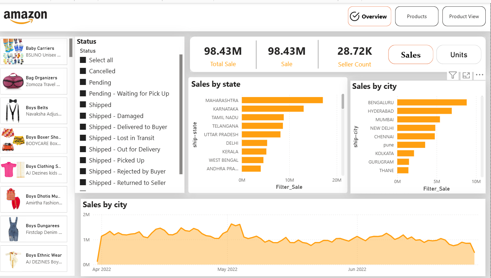

Amazon Sales Power BI Dashboard
An interactive Power BI report analysing ₹98.43M in Amazon marketplace sales across 28.72K sellers, built to track regional performance, order fulfilment health, and product-level demand. The report uses a multi-page navigation structure (Overview, Products, Product View) with a Sales/Units metric toggle, letting stakeholders switch between revenue and volume views of the same visuals without rebuilding the page.
Dashboard Preview

Project Overview
I worked with a raw Amazon order-level dataset covering April–June 2022 and transformed it in Power Query — handling nulls, standardising city and state names, fixing data types, and building a clean date table for time intelligence. On top of that I wrote DAX measures for Total Sale, Seller Count, and a switch measure that drives the Sales/Units toggle so every visual responds to a single button selection. The report layout is built around three analytical questions: where sales come from (state and city breakdowns), what is selling (a product gallery with images pulled in alongside product and brand names), and what is going wrong (an order-status slicer covering the full fulfilment lifecycle — Pending, Shipped, Out for Delivery, Damaged, Lost in Transit, Rejected by Buyer, Returned to Seller and Cancelled). Cross-filtering ties everything together, so selecting a status or a state instantly reframes every other visual.